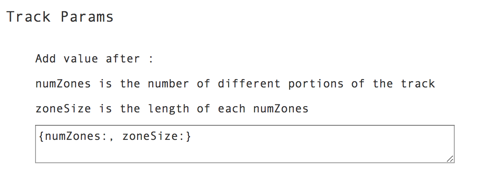
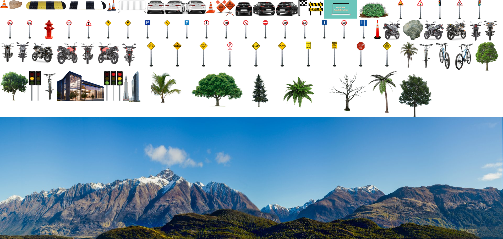

Neste apêndice será descrito um guia de utilização passo-a-passo do simulador de corridas desenvolvido. Mais documentação pode ser encontrada em https://zecarlos94.github.io/pvsio_web_2D_driving_simulator/car_docs/ e em https://zecarlos94.github.io/pvsio_web_2D_driving_simulator/car_private_api_docs/ ( ambos em inglês ).
Criar uma Simulação Nova
Nesta seção apresenta-se o guia de utilização passo-a-passo para criar uma nova pista, i.e. os novos ambientes circundantes a renderizar, com o widget TrackGenerator e, para renderizar, de seguida, a mesma com o widget Arcade.
O resultado final deverá ser uma renderização semelhante à que se apresenta na figura 1.
A figura 2 permitiu agrupar todas as imagens individuais numa só, tornando o simulador mais eficiente, devido ao menor número de leituras de ficheiros, e mais leve, visto que uma imagem ocupa menos espaço que um conjunto de imagens separadas. Para tal utilizou-se o conceito de spritesheets que será abordado mais à frente.

-
Etapas do utilizador, usando o widget de customização (mais fácil)
Estas etapas são as etapas necessárias para a criação de uma nova simulação, dedicada aos utilizadores menos conscientes, onde o utilizador apenas terá de preencher os menus de customização, para personalizar a simulação, não definindo, portanto, os campos opcionais manualmente (não necessita de saber programar).
Um exemplo de valores possíveis para preencher esses menus de customização é apresentado em http://github.com/zecarlos94/pvsio-web/tree/gamingDev/src/client/app/widgets/car/configurations/CustomizationFieldsPossibleValues_Demo_Driving_Simulator.txt.
Primeiro, abra o endereço http://localhost:8082/demos/driving_simulator/ no browser Google Chrome. Deverá ter aparecido no ecrã um conjunto de menus de customização que deverá preencher por forma a customizar a simulação desejada.
-
Selecione a imagem do volante, no menu apresentado na Figura 3, que pretende usar no design do painel de instrumentos automotivo, que será usado durante a simulação.

Figura 3 - Menu de Seleção do Volante -
Utilize os color pickers, no menu apresentado na Figura 4, para escolher as cores dos ambientes circundantes a renderizar posteriormente.

Figura 4 - Menu de Seleção das Cores da Pista - grass1 é a cor da paisagem (verde claro na Figura 1)
- border1 é a cor principal do delimitador (delimitador vermelho na Figura 1)
- border2 é a cor secundária do delimitador (delimitador branco na Figura 1). Alterna entre a cor border1 e a cor border2, com base no número de segmentos definidos no campo opcional numberOfSegmentPerColor, que por padrão são 4 segmentos.
- outborder1 é a cor do espaço entre a paisagem e a borda delimitadora da pista, ou seja, a berma (verde escuro na Figura 1)
- outborder_end1 é a cor da borda do delimitador da pista (cinza escuro na Figura 1)
- track_segment1 é a cor da pista (cinza claro na Figura 1)
- lane1 é a cor principal dos separadores de faixas na pista (faixas brancas dentro da pista na Figura 1)
- lane2 é a cor secundária dos separadores de faixas na pista (faixas cinza claro dentro da pista, i.e. possui a mesma cor que a cor da pista, para ficar invisível ao alternar as cores, obtendo o efeito de linhas descontínuas. Para se obter linhas contínuas apenas será necessário fornecer a mesma cor a lane1 e a lane2, na Figura 1)
- laneArrow1 é a cor da seta guia apresentada no canto superior direito do simulador (seta verde na Figura 1)
- track_segment_end é a cor principal da linha de ínicio/fim da pista (listras pretas, na linha de ínicio/fim, na Figura 1)
- lane_end é a cor secundária da linha de ínicio/fim da pista (listras brancas, na linha de ínicio/fim, na Figura 1)
-
Insira dentro dos parêntesis rectos, no menu apresentado na Figura 5, a topografia da pista, que será construída e renderizada.
Figura 5 - Menu de Seleção da Topografia e Perfil de Elevação da Pista Utilize apenas as palavras-chave: left, right e straight para descrever a topografia da pista, depois da propriedade name e utilize apenas as palavras-chave: flat, up e down para descrever o perfil de elevação da pista depois da propriedade profile. Utilize ângulos, em graus, para definir o ângulo de curvatura depois da propriedade curvature.
O ângulo 0 representa uma linha reta. Para representar curvaturas à esquerda, o ângulo deve estar entre 0 e -90. Para representar as curvaturas direitas, o ângulo deve estar entre 0 e 90. Este ângulo não representa o ângulo de curvatura final, mas será utilizado para calcular o mesmo, talvez como trabalho futuro se possa implementar essa funcionalidade.
Na propriedade numZones deverá escrever o número de blocos consecutivos a contruir e a renderizar com essa topografia e perfil. Por exemplo, se colocar o número 2 e pretender criar uma curva plana à esquerda, i.e. name: left e profile: flat, então serão criados todos os segmentos necessários para renderizar 2 curvas planas à esquerda consecutivas na pista. Por defeito o valor deverá ser 1 para as curvas, visto que o maior benefício desta propriedade é permitir a construção de linhas retas com diferentes comprimentos, ao colocar blocos consecutivos de linhas retas, no entanto o utilizador pode fazer o que desejar.
Para descrever os sinais de trânsito é necessário preencher a propriedade trafficSignals. Nesta propriedade o utilizador deverá fornecer os sinais (campos filename) a colocar, em que zona da topografia descrita, campos zone, serão colocados, em que posição horizontal, campos posX, serão colocados, qual a escala, campos scale, a aplicar a esses sinais e em que posição vertical serão colocados, isto é, a que distância da zona serão colocados, sendo que a distância máxima corresponde ao valor de zoneSize (tamanho máximo de cada zona).
{ "filename":"50kmh_limit", "zone": 1, "scale": 2.3, "posX": 0.4, "zoneDistance": 50 }Por exemplo, o objeto, apresentado no excerto acima, representa o sinal de trânsito cujo nome coincide com o nome da imagem presente no ficheiro de mapeamento de coordenadas JSON da spritesheet. Ou seja, a imagem "50kmh_limit.png" encontra-se agrupada na spritesheet fornecida pelo utilizador.
Este sinal de trânsito será colocado na zona 1, com a escala de 2.3, i.e. será ampliado 2.3 vezes em relação ao tamanho original, e será colocado na posição horizontal 0.4, i.e. no lado esquerdo, e a uma distância de 50 em relação ao tamanho total da zona, que por defeito é 250. Então, verifica-se que este sinal de trânsito aparecerá na parte inicial da zona na topografia definida.
O processo é semelhante para todos os restantes sinais de trânsito, sendo que o valor inserido no campo zone deverá ser sequencial, isto é, se o utilizador declarar mais que uma topografia, as zonas que compõem a topografia final (conjunto de todas as topografias) deverão ter numeração sequencial.
Ou seja, o campo zone não diz respeito apenas à topografia local, mas sim à topografia global. Por exemplo, se trackLayout possuir três topografias, curva à esquerda, linha recta e curva à direita, e onde cada topografia possui o valor dois no campo numZones, i.e. a pista possuirá duas curvas à esquerda consecutivas, duas linha rectas consecutivas e duas curvas à direita consecutivas, o que perfaz um total de seis zonas.
Então, ao definir os sinais de trânsito de cada uma das topografias será necessário identificar no campo zone o valor de um a seis em vez de um a dois. Isto é, se a topografia curva à esquerda tiver um sinal de trânsito, este deverá ter o valor um ou dois no campo zone e se a topografia curva à direita tiver um sinal de trânsito, este deverá ter o valor cinco ou seis no campo zone.
-
Insira o nome do ficheiro de configuração JSON da spritesheet, no menu apresentado na Figura 6. Ou seja, forneça o nome do ficheiro com o mapeamento de coordenadas da imagem spritesheet, que agrupa todos os sprites utilizados na simulação.
Figura 6 - Menu de Seleção do Ficheiro JSON de Mapeamento de Coordenadas da Imagem Spritesheet -
Insira o nome da imagem spritesheet, no menu apresentado na Figura 7, que agrupa todos os sprites utilizados na simulação.
Caso pretenda uma simulação arcade, deverá fornecer o nome das duas imagens spritesheet necessárias, uma com os sprites das letras (fonte a utilizar) e outra com todos os objetos e obstáculos a renderizar.
No caso de desejar uma simulação realista será apenas necessário fornecer a imagem spritesheet com todos os objetos e obstáculos a renderizar. Este tipo de simulação é escolhida num campo opcional do widget Arcade, que será abordado no tutorial para os utilizadores mais conscientes.
Figura 7 - Menu de Seleção das Imagens Spritesheet -
Insira entre os parêntesis rectos, no menu apresentado na Figura 8, os sprites a colocar na paisagem, separados por ','. Por exemplo, se o utilizador desejar colocar apenas àrvores na paisagem, cuja imagem possui o nome "tree.png", na imagem spritesheet, fornecida no menu apresentado na Figura 7, o utilizador deverá colocar "tree" no campo filename, colocar o respetivo valor da escala a aplicar a esta àrvore no campo scale e colocar as posições horizontais onde poderá ser colocado no campo positionsX.

Figura 8 - Menu de Seleção dos Objectos da Paisagem -
Insira entre os parêntesis rectos, no menu apresentado na Figura 9, os sprites a colocar dentro da pista, isto é, os obstáculos a contornar na simulação, separados por ','. Por exemplo, se o utilizador desejar colocar apenas pedras como obstáculos dentro da pista, cuja imagem possui o nome "rock2.png", na imagem spritesheet, fornecida no menu apresentado na Figura 7, o utilizador deverá colocar "rock2" no campo filename, colocar o respetivo valor da escala a aplicar a esta pedra dentro da pista scale e colocar as posições horizontais onde poderá ser colocado dentro dos limites da pista positionsX.

Figura 9 - Menu de Seleção dos Obstáculos dentro da Pista -
Preencha os parâmetros necessários à simulação, apresentados no menu na Figura 10. O parâmetro numZones deverá ter o número total de blocos a renderizar, que será igual à soma de todos os parâmetros numZones fornecidos na definição da topografia, numa das etapas anteriores. O parâmetro zoneSize deverá possuir o comprimento de cada bloco a renderizar, por defeito o valor é 250.

Figura 10 - Menu de Seleção dos Parâmetros da Pista -
Indicar o veículo a utilizar na simulação, no menu na Figura 11, presente no ficheiro de configuração JSON e na imagem spriteheet fornecidos, nas etapas 4 e 5. Os tipos de veículo disponíveis são airplane, bicycle, car, helicopter e motorbike.
Contudo para escolher o veículo será necessário que este exista nos ficheiros supracitados, para que o motor de renderização saiba onde pode ir recolher a imagem desse veículo. Por exemplo, se o ficheiro de configuração JSON e a imagem spriteheet possuírem as três imagens de um helicóptero, isto é, as imagens com o helicóptero virado para a frente, para a esquerda e para a direita, cujos nomes das imagens são "helicopter_faced_front.png", "helicopter_faced_left.png" e "helicopter_faced_right.png", tal como já foi explicado no capítulo de implementação, então o utilizador deverá escrever true,false,"helicopter",1.
- O valor true indica que a simulação deverá mostrar a imagem do veículo escolhido pelo utilizador.
- O valor false indica que as imagens a utilizar na simulação não são realistas, ou seja, o utilizar está a indicar que a simulação será do tipo arcade, i.e. com gráficos semelhantes aos jogos de arcade antigos.
- O valor 1 indica o índice da imagem. Se o utilizador colocar 1, o motor de renderização irá procurar as imagens "helicopter1_faced_front.png", "helicopter1_faced_left.png" e "helicopter1_faced_right.png" e caso não encontre nenhuma, irá procurar, por defeito, por "helicopter_faced_front.png", "helicopter_faced_left.png" e "helicopter_faced_right.png".
Caso o utilizador pretenda uma simulação realista, deverá escrever true,true,"real\_helicopter",1, onde as imagens "real_helicopter1_faced_front.png", "real_helicopter1_faced_left.png" e "real_helicopter1_faced_right.png" deverão existir no ficheiro de configuração JSON e na imagem spriteheet.
De igual forma, se estas imagens não forem encontradas, o motor de renderização irá procurar "real_helicopter_faced_front.png", "real_helicopter_faced_left.png" e "real_helicopter_faced_right.png".
Caso o utilizador pretenda que a simulação não renderize a imagem do veículo realista deverá escrever false,true,"real_helicopter",1.

Figura 11 - Menu de Seleção do Veículo -
Selecione outras opções de customização para os widgets do painel de instrumentos automotivo, que serão renderizados na simulação, e outros aspetos de renderização utilizando os seguintes sliders, na Figura 12.

Figura 12 - Menu de Seleção de Intervalos - Selecione os valores máximos que os widgets Speedometer e Tachometer terão, nos intervalos 'Value of Speedometer' e 'Value of Tachometer', na Figura 13. Se os valores indicados nestes intervalos forem 200 e 9, respetivamente, e se o volante selecionado for o volante porsche (volante roxo), então o painel de instrumentos automotivo final, que será utilizado durante a simulação, será o painel apresentado na Figura 14.
- Selecione o número desejado de faixas, a renderizar dentro da pista durante a simulação, no intervalo 'Number of Lanes', na Figura 15.
- Selecione a frequência dos obstáculos, na Figura 16, a serem colocados dentro da pista, durante a simulação, no intervalo 'Frequence of Obstacles', ou seja, escolha em quantas iterações um novo obstáculo surge.
- Selecione o número desejado de voltas, na Figura 17, a ser renderizado pelo widget Arcade durante a simulação, no intervalo 'Number of Laps'.
- Escolha se o widget Arcade usará as instruções do PVS durante a simulação, na Figura 18. Por padrão, valor 0, usará instruções do PVS para atualizar o estado do veículo durante a simulação. Este intervalo permite testar a diferença na velocidade dos processos de renderização, já que as instruções do PVS tornam a simulação mais lenta do que calcular esses valores internamente no widget.
- Para terminar a customização, deslize o último intervalo, na Figura 19, para a direita. Após essa ação, deverá surgir no ecrã o conjunto de widgets, de acordo com a customização realizada. Caso o ecrã fique branco, o utilizador deverá refrescar o browser, visto que o último poderá não ter lido a totalidade dos ficheiros de configuração, por exemplo, devido a uma conexão à internet pior.

Figura 13 - Menu de Seleção dos Intervalos dos widgets Speedometer e Tachometer Figura 14 - Resultado da Customização 
Figura 15 - Menu de Seleção do Número de Faixas na Pista 
Figura 16 - Menu de Seleção da Frequência dos Obstáculos Figura 17 - Menu de Seleção do Número de Voltas Figura 18 - Menu de Seleção da Utilização das Instruções PVS 
Figura 19 - Slider para Terminar a Customização
Embora não tenha sido um objetivo nesta dissertação, o widget Customization foi criado para facilitar o processo de simulação. No entanto, como tal não era uma prioridade, esse widget poderá ser aprimorado no futuro.
Por exemplo, adicionar outras opções de customização, que correspondam aos campos opcionais que os widgets TrackGenerator e Arcade possuem, e que não são preenchidos com os atuais menus.
-
-
Etapas do utilizador, com apenas configurações manuais (mais difícil)
Estas etapas são dedicadas aos utilizadores mais conscientes, ou seja, o utilizador deverá ter conhecimentos de programação minímos, visto que é este que define, manualmente, todos os campos opcionais e que utiliza as APIs (Application programming interface) desenvolvidas, no ficheiro https://github.com/zecarlos94/pvsio-web/blob/gamingDev/examples/demos/old_appearance_arcade_game_simulator/js/index.js.
Atualmente é possível testar a demonstração arcade, em http://localhost:8082/demos/old_appearance_arcade_game_simulator/, para testar as interações PVS-widget Arcade, i.e. utilizar o estado PVS para atualizar o estado do widget Arcade.
Na demonstração http://localhost:8082/demos/old_appearance_track_generator_simulator/ é possível criar uma nova pista arcade utilizando o widget TrackGenerator.
É nesta demonstração que o utilizador pode criar a pista desejada, utilizando os métodos que geram a pista aleatoriamente ou utilizando os métodos que geram a pista com base no layout fornecido. O excerto de código apresentado a seguir descreve a criação de uma pista que é composta por um bloco de uma curva plana à esquerda, seguida de um bloco de linha reta para baixo, seguida de uma curva plana à direita.
let trackGenerator = {}; trackGenerator.trackGeneratorWidget = new TrackGenerator("trackGeneratorWidget", { top: 80, left: 650, width: 780, height: 650 }, { parent: "content", // defines parent div, which is div id="body" by default spritesFilename: "spritesheet", // defines spritesheet configuration filename, which is "spritesheet.json" by default render: { depthOfField: 150, camera_distance: 30, camera_height: 270 }, trackSegmentSize: 5, numberOfSegmentPerColor: 4, numLanes: 3, laneWidth: 0.02, trackParam: { numZones: 3, // number of different portions of the track zoneSize: 250 // length of each numZones (the bigger this value. the longer it will take to finish) }, // Information regarding current controllable_vehicle's car controllable_vehicle: { position: 10, speed: 0, acceleration: 0.05, deceleration: 0.3, breaking: 0.6, turning: 5.0, posx: 0, maxSpeed: 15 }, objects: [ { filename:"tree", scale: 3.5, positionsX: [ -2.4, 2.3 ] }, { filename:"stump", scale: 3.5, positionsX: [ -2.9, 4.2 ] }, { filename:"boulder", scale: 3.5, positionsX: [ -1.8, 1.6 ] }, { filename:"tree2", scale: 3.5, positionsX: [ -1.6, 1.8 ] }, { filename:"brunetteGirlBack", scale: 6, positionsX: [ -1.7, 1.9 ] }, { filename:"bush2", scale: 6, positionsX: [ -1.9, 1.7 ] }, { filename:"hatManBack", scale: 7, positionsX: [ 2.9, -2.7 ] } ], obstacle: [ { filename:"dead_tree2", scale: 2.75, positionsX: [ 0.4 ] }, { filename:"column", scale: 2.75, positionsX: [ 0.4 ] }, { filename:"dearRight", scale: 1.75, positionsX: [ -0.4, 0.4, -0.3, 0.2, 0 ] } ], obstaclePerIteration: 20, trackColors: { grass1: "#699864", border1: "#e00", border2: "#fff", outborder1: "#496a46", outborder_end1: "#474747", track_segment1: "#777", lane1: "#fff", lane2: "#777", laneArrow1: "#00FF00", track_segment_end:"#000", lane_end: "#fff" }, trackLayout: [ { topography: { name:"left", curvature: -90 }, profile: "flat", numZones: 1, trafficSignals: [] }, { topography: { name:"straight", curvature: 0 }, profile: "down", numZones: 1, trafficSignals: [] }, { topography: { name:"right", curvature: 90 }, profile: "flat", numZones: 1, trafficSignals: [] }, ], callback: onMessageReceived });O primeiro argumento do construtor é o identificador do widget. O segundo argumento são as coordenadas onde o widget será colocado. E o terceiro argumento são os campos opcionais onde o utilizador define as características do novo ambiente de teste a criar, e que será renderizado posteriormente pelo widget Arcade.
- O campo opcional spritesFilename é o ficheiro de configuração JSON que possui o mapeamento de coordenadas das várias imagens que compõem a imagem da spritesheet.
- O campo opcional render possui as configurações de renderização necessárias para o posicionamento da câmara.
- O campo opcional trackSegmentSize é o tamanho de cada segmento a criar, que irá influenciar a distância final a percorrer.
- O campo opcional numberOfSegmentPerColor É o valor x que a cada x segmentos alterna as cores das listras de pista e dos delimitadores de pista, i.e. alterna da cor primária para a cor secundária e vice-versa.
- O campo opcional numLanes é o número de faixas a criar dentro da pista.
- O campo opcional laneWidth é a largura de cada listra, que separa as faixas criadas dentro da pista.
- O campo opcional controllable_vehicle é o conjunto de informações que permitem calcular as posições do veículo, caso o estado não seja atualizado pelo estado PVS por opção do utilizador, num outro campo opcional.
- O campo opcional objects são os nomes das imagens dos objetos a colocar na paisagem, bem como o valor da escala a aplicar e as posições horizontais onde poderão ser colocados. Por cada nome colocado, deverá existir uma imagem na imagem da spritesheet, com a extensão PNG, que deverá coincidir com o valor da propriedade "filename" do ficheiro de configuração fornecido. Por exemplo, se o utilizador colocar "tree", deverá existir uma propriedade "filename":"tree.png" no ficheiro de mapeamento de coordenadas fornecido.
- O campo opcional obstacle são os nomes das imagens dos obstáculos a colocar dentro da pista, que deverão ser contornados, bem como o valor da escala a aplicar e as posições horizontais onde poderão ser colocados. Por cada nome colocado, deverá existir uma imagem na imagem da spritesheet, com a extensão PNG, que deverá coincidir com o valor da propriedade "filename" do ficheiro de configuração fornecido. Por exemplo, se o utilizador colocar "rock", deverá existir uma propriedade "filename":"rock.png" no ficheiro de mapeamento de coordenadas fornecido.
- O campo opcional obstaclePerIteration é o valor x que a cada x iterações coloca um novo obstáculo dentro da pista.
- O campo opcional trackColors possui o conjunto de cores que irão compor a renderização posterior pelo widget Arcade.
- O campo opcional trackLayout possui o layout da pista que se pretende criar e renderizar. Caso o utilizador pretenda utilizar uma das APIs de criação aleatória não será necessário fornecer este campo.
- O campo opcional trackParam possui os campos que permitem inferir o tamanho final da pista a criar.
Após a instanciação do widget, apenas será necessário invocar a API necessária para criar o ficheiro de configuração JSON que será fornecido ao widget Arcade com todos os segmentos que constituem a pista desejada e com todas as informações acerca da renderização desejada, como por exemplo, as cores da pista e as propriedades que permitem posicionar a câmara. O utilizador deverá escolher uma das seguintes APIs,
- A API que permite criar uma pista e os ambientes em seu redor, aleatoriamente, com apenas linhas retas encontra-se no excerto de código a seguir, cujo nome é GenerateStraightTrack. Relembra-se que para utilizar esta API, não será necessário fornecer o layout da pista, visto que não será utilizado.
trackGenerator.trackGeneratorWidget.generateStraightTrack();- A API que permite criar uma pista e os ambientes em seu redor, aleatoriamente, com linhas retas e curvas, com perfis de elevação, encontra-se no excerto de código a seguir, cujo nome é GenerateTrackCurvesSlopes. Relembra-se que para utilizar esta API, não será necessário fornecer o layout da pista, visto que não será utilizado.
trackGenerator.trackGeneratorWidget.generateTrackCurvesSlopes();- A API que permite criar uma pista e os ambientes em seu redor, com base no layout desejado, encontra-se no excerto de código a seguir, cujo nome é GenerateTrackBasedOnTrackLayoutOptField.
trackGenerator.trackGeneratorWidget.generateTrackBasedOnTrackLayoutOptField();
No caso de o utilizador apenas instanciar o construtor do widget TrackGenerator para criar a pista e os ambientes em seu redor e não inserir nenhum campo opcional, o widget utilizará os valores predefinidos apresentados no seguinte excerto de código,
parent: "body",
spritesFilename: "spritesheet",
render: {depthOfField: 150,camera_distance: 30,camera_height: 320},
trackSegmentSize: 5,
numberOfSegmentPerColor: 4,
numLanes: 3,
laneWidth: 0.02,
trackParam: {numZones: 12,zoneSize: 250},
controllable_vehicle: {
position: 10,
speed: 0,
acceleration: 0.05,
deceleration: 0.3,
breaking: 0.6,
turning: 5.0,
posx: 0,
maxSpeed: 15
},
objects: [],
obstacle: [],
obstaclePerIteration: 50,
trackColors: {
grass1: "#699864",
border1: "#e00",
border2: "#fff",
outborder1: "#496a46",
outborder_end1: "#474747",
track_segment1: "#777",
lane1: "#fff",
lane2: "#777",
laneArrow1: "#00FF00",
track_segment_end:"#000",
lane_end: "#fff"
},
trackLayout: []A invocação de uma das APIs supracitadas resulta na criação de um ficheiro de configuração JSON com a estrutura apresentada no próximo excerto de código, que será fornecido ao widget Arcade, onde o utilizador poderá visualizar e simular a pista e os ambientes que a rodeia.
generatedJSON = {
controllable_vehicle: controllable_vehicle,
laneWidth: laneWidth,
numLanes: numLanes,
numberOfSegmentPerColor: numberOfSegmentPerColor,
render: render,
track: generatedTrack,
trackParam: trackParam,
trackSegmentSize: trackSegmentSize,
trackColors: trackColors
};Atualmente, a plataforma PVSio-web não possui APIs de escrita de ficheiros, no contexto de widgets. Como tal, o widget TrackGenerator não pode escrever o ficheiro de configuração JSON apresentado no excerto de código anterior.
É por esta razão que a demonstração para os utilizadores menos conscientes, i.e. a que fornece menus de customização, ainda não está a renderizar a pista criada nesses menus de customização, apesar de já estar a apresentar os restantes componentes da simulação customizados.
Então, é necessário que o utilizador execute um console.log(JSON.stringify(self2.generatedJSON)) e copie e cole, manualmente, o resultado obtido num ficheiro de configuração JSON vazio. Ou seja, é o utilizador precisa de efetuar a ação manualmente que uma das futuras APIs de escrita de ficheiros irá realizar, quando for devidamente implementada pela plataforma.
Quando a API de escrita de ficheiros, no contexto de widgets, existir, esta deverá ser incluída nas linhas que possuam console.log(JSON.stringify(self2.generatedJSON)) (linhas 694, 1006 e 1242). Essa API de escrita de ficheiros, no contexto de widgets, deverá retornar o nome do ficheiro recém-criado, para que esse possa ser usado automaticamente no widget Customization, por forma a ligar os widgets TrackGenerator e Arcade
Isto é, por forma a criar uma nova pista e ambientes que a rodeia e a renderizar de seguida a mesma. Para obter informações mais detalhadas, consulte o ficheiro do widget Customization em https://github.com/zecarlos94/pvsio-web/tree/gamingDev/src/client/app/widgets/car/Customization.js (linha 1788 deverá ter o valor resultante da invocação presente na linha 1774, i.e. o valor devolvido pela API de escrita de ficheiros).
Após a criação do ficheiro de configuração JSON supramencionado é, então, possível renderizá-lo com o widget Arcade.
Para renderizar a pista desejada e os ambientes que a rodeia, criados anteriormente pelo widget TrackGenerator é necessário instanciar o widget Arcade e preencher os respetivos campos opcionais, bem como criar todos os botões que permitem interargir com a simulação (acelerar, travar, etc) e instanciar os componentes do painel de instrumentos automotivo que se deseja testar (velocímetro, tacómetro e volante), como exemplificado nos excertos de código que se apresentam a seguir.
Para criar os botões que permitem interargir com a simulação utiliza-se o construtor do widget ButtonExternalController, que recebe como primeiro argumento o identificador do botão, que corresponderá ao nome da função especificada formalmente no ficheiro https://github.com/zecarlos94/pvsio-web/blob/gamingDev/examples/demos/old_appearance_arcade_game_simulator/pvs/main.pvs, na demonstração do tipo arcade explicada anteriormente, com a linguagem formal PVS.
O segundo argumento diz respeito à posição do botão, i.e. as coordenadas onde será colocado. E, por fim, o terceiro argumento são os campos opcionais que permitem identificar se o evento a criar no botão é do tipo press/release ou click, que influencia diretamente o nome da função especificada formalmente supracitada, e identificar a qual tecla física é que o botão está associado.
Por exemplo, o botão accelerate, está associado à tecla com o keyCode 38, que corresponde à tecla de seta para cima no teclado físico. Neste exemplo, visto que o evento do botão é definido como ['press/release'], no ficheiro de especificação formal, deverá existir as funções press_accelerate e release_accelerate, que determinam o comportamento do botão quando cada um desses eventos é despoletado. Por defeito, se o construtor não receber o campo opcional evts, o evento é definido como ['click'], o que obriga a que a função click_accelerate exista. O excerto de código a seguir demonstra a declaração não só do botão accelerate, mas também dos restantes botões que constituem a presente demonstração, por forma a que se possa testar os designs dos painéis automotivos com o comportamento semelhante ou igual aos comportamentos dos componentes reais.
let arcade = {};
// --- DASHBOARD INTERACTION
arcade.up = new ButtonExternalController("accelerate", { width: 0, height: 0 }, {
callback: onMessageReceived,
evts: ['press/release'],
keyCode: 38 // key up
});
arcade.down = new ButtonExternalController("brake", { width: 0, height: 0 }, {
callback: onMessageReceived,
evts: ['press/release'],
keyCode: 40 // key down
});
// --- ARCADE SIMULATOR INTERACTION
arcade.resume = new ButtonExternalController("resume", { width: 0, height: 0 }, {
callback: onMessageReceived,
evts: ['press/release'],
keyCode: 32 // key space
});
arcade.pause = new ButtonExternalController("pause", { width: 0, height: 0 }, {
callback: onMessageReceived,
evts: ['press/release'],
keyCode: 83 // key 's'
});
arcade.quit = new ButtonExternalController("quit", { width: 0, height: 0 }, {
callback: onMessageReceived,
evts: ['press/release'],
keyCode: 81 // key 'q'
});
arcade.mute = new ButtonExternalController("mute", { width: 0, height: 0 }, {
callback: onMessageReceived,
evts: ['press/release'],
keyCode: 77 // key 'm'
});
arcade.unmute = new ButtonExternalController("unmute", { width: 0, height: 0 }, {
callback: onMessageReceived,
evts: ['press/release'],
keyCode: 85 // key 'u'
});Para instanciar os componentes do painel de instrumentos automotivo, velocímetro, tacómetro e volante, o utilizador deverá instanciar os construtores Speedometer, Tachometer e SteeringWheel. Os construtores Speedometer e Tachometer recebem como primeiro argumento o identificador do widget que será utilizado para criar a div com todos os componentes desses medidores, cuja construção foi conseguida utilizando a biblioteca d3-gauges. Como segundo argumento recebem as coordenadas onde deverão ser colocados. E como terceiro argumento, recebem os campos opcionais que permitem diferenciar a aparência do medidor, que é definida pelos intervalos fornecidos em min e max, cuja unidade/métrica é fornecida em label. De seguida, apresenta-se o excerto de código com a instanciação dos três widgets que correspondem aos componentes do painel de instrumentos automotivo, velocímetro, tacómetro e volante.
// --- DASHBOARD COMPONENTS
// --- SPEEDOMETER
arcade.speedometerGauge = new Speedometer('speedometer-gauge', {
label: "kmh",
max: 260,
min: 0
});
// --- TACHOMETER
arcade.tachometerGauge = new Tachometer('tachometer-gauge', {
max: 9,
min: 0,
label: "x1000/min"
});
// --- STEERING WHEEL
arcade.steeringWheel = new SteeringWheel("steering_wheel", {
top: 220,
left: 20,
width: 600,
height: 600
}, {
style: "ferrari",
callback: onMessageReceived
});
Para instanciar o widget Arcade, o utilizador deverá invocar o construtor Arcade, cujo primeiro argumento é o identificador do widget e o segundo argumento as coordenadas onde este será colocado. Por último, o terceiro argumento, são os campos opcionais que permitem configurar a simulação gráfica, i.e. que permitirá ao utilizador visualizar a pista e os ambientes que a rodeia. O excerto de código seguinte demonstra a instanciação do widget Arcade, que permitirá visualizar os ambientes circundantes criados anteriormente, pelo widget TrackGenerator, e parametrizados no respetivo ficheiro JSON fornecido num campo opcional desta instaciação.
// ---ARCADE SIMULATOR
arcade.arcadeWidget = new Arcade("arcadeWidget",
{
top: 0,
left: 630,
width: 800,
height: 600
},
{
parent: "content", // defines parent div, which is div id="body" by default
scaleWindow: 1, // scales canvas div
trackFilename: "trackLayoutArcade2", // defines track configuration filename, which is "track-curves-slopes-random.json" by default
spritesFilename: "spritesheet", // defines spritesheet configuration filename, which is "spritesheet.json" by default
spritesFiles: ["spritesheet","spritesheet.text"], // defines all spritesheets(images). Default are "spritesheet.png" and "spritesheet.text.png"
realisticImgs: false,
useVehicle: true,
vehicle: "car", // available vehicles: ["airplane","bicycle","car","helicopter","motorbike"]
vehicleImgIndex: 1, // defines vehicle sprite image suffix
logoImgIndex: 3, // defines logo sprite image suffix
backgroundImgIndex: 1, // defines background sprite image suffix
stripePositions: {
trackP1: -0.55,
trackP2: 0.55,
borderWidth: 0.08,
inOutBorderWidth: 0.02,
landscapeOutBorderWidth: 0.13,
diffTrackBorder: 0.05,
finishLineP1: -0.40,
finishLineP2: 0.40,
diffLanesFinishLine: 0.05
},
// lapNumber: 3,
// showOfficialLogo: true,
loadPVSSpeedPositions: true,
// predefinedTracks: 4,
// newLap_functionNamePVS: "set_positions_init",
// action_attribute: "action",
// direction_attribute: "direction",
// sound_attribute: "sound",
// speed_attribute: "speed",
// posx_attribute: "posx",
// position_attribute: "position",
// speed_value: "val",
// posx_value: "val",
// position_value: "val",
// left_attribute: "left",
// right_attribute: "right",
// straight_attribute: "straight",
// accelerate_attribute: "acc",
// brake_attribute: "brake",
// idle_attribute: "idle",
// quit_attribute: "quit",
// pause_attribute: "pause",
// resume_attribute: "resume",
// mute_attribute: "mute",
// unmute_attribute: "unmute",
callback: onMessageReceived
});Os diferentes campos opcionais do widget Arcade serão agora explicados com mais detalhe.
- O campo opcional parent é o identificador da div, onde todo o HTML relacionado será acrescentado.
- O campo opcional trackFilename é o ficheiro de configuração JSON que foi produzido pelo widget TrackGenerator, i.e. é o ficheiro com os segmentos criados que terão de ser renderizados, bem como outras opções de visualização, como por exemplo os valores que permitem calcular a posição da câmara na Canvas. Este campo opcional deverá receber o nome do ficheiro criado pela APIs de escrita de ficheiros, quando esta existir, para permitir o fluxo contínuo entre a criação da pista e dos seus ambientes e a sua renderização.
- O campo opcional spritesFilename é o ficheiro de configuração JSON que possui o mapeamento de coordenadas das várias imagens que compõem a imagem da spritesheet.
- O campo opcional spritesFiles possui o nome da imagem spritesheet, que agrupa todos os sprites utilizados na simulação. Caso pretenda uma simulação arcade, deverá fornecer o nome das duas imagens spritesheet necessárias, uma com os sprites das letras (fonte a utilizar) e outra com todos os objetos e obstáculos a renderizar. No caso de desejar uma simulação realista será apenas necessário fornecer a imagem spritesheet com todos os objetos e obstáculos a renderizar.
- O campo opcional useVehicle indica se a simulação apresentará a imagem do veículo escolhida ou não. Ou seja, o utilizador deverá escrever false caso não pretenda visualizar nenhum veículo na simulação.
- O campo opcional realisticImgs indica se as imagens a utilizar na simulação são ou não realistas, ou seja, se a simulação será ou não do tipo arcade, i.e. com gráficos semelhantes aos jogos de arcade antigos. Caso o utilizador pretenda uma simulação realista, deverá escrever true, onde as imagens "real_helicopter_faced_front.png", "real_helicopter_faced_left.png" e "real_helicopter_faced_right.png" deverão existir no ficheiro de configuração JSON e na imagem spriteheet. Caso contrário, o utilizador deverá escrever false.
- O campo opcional vehicle indicar o veículo a utilizar na simulação, presente no ficheiro de configuração JSON e na imagem spriteheet fornecidos, nos campos opcionais spritesFilename e spritesFiles. Os tipos de veículo disponíveis são airplane, bicycle, car, helicopter e motorbike. Contudo para escolher o veículo será necessário que este exista nos ficheiros supracitados, para que o motor de renderização saiba onde pode ir recolher a imagem desse veículo. Por exemplo, se o ficheiro de configuração JSON e a imagem spriteheet possuírem as três imagens de um helicóptero, isto é, as imagens com o helicóptero virado para a frente, para a esquerda e para a direita, cujos nomes das imagens são "helicopter_faced_front.png", "helicopter_faced_left.png" e "helicopter_faced_right.png", tal como já foi explicado no capítulo de implementação, então o utilizador deverá escrever helicopter. Em suma, por cada nome colocado, deverá existir três imagens na imagem da spritesheet, com os sufixos _faced_front, _faced_left e _faced_right, que permitem mudar a imagem do objeto consoante a direção do veículo calculada ou atualizada pelo estado PVS.
- O campo opcional vehicleImgIndex indica o índice da imagem do veículo fornecido no campo opcional vehicle. Por exemplo, se o utilizador colocar 1 e o campo opcional vehicle for helicopter, o motor de renderização irá procurar as imagens "helicopter1_faced_front.png", "helicopter1_faced_left.png" e "helicopter1_faced_right.png" e caso não encontre nenhuma, irá procurar, por defeito, por "helicopter_faced_front.png", "helicopter_faced_left.png" e "helicopter_faced_right.png".
- O campo opcional logoImgIndex indica o índice da imagem do logo que aparece nos menus inicial, pausa e fim. Por exemplo, se o utilizador colocar 3, o motor de renderização irá procurar as imagens "logo3.png" e caso não a encontre, irá procurar, por defeito, por "logo.png".
- O campo opcional backgroundImgIndex indica o índice da imagem do background da simulação. Por exemplo, se o utilizador colocar 2, o motor de renderização irá procurar as imagens "background2.png" e caso não a encontre, irá procurar, por defeito, por "background.png".
- O campo opcional stripePositions permite que o utilizador defina as posições onde serão colocados os delimitadores, a paisagem e a pista. Ou seja,
- trackP1 é a posição horizontal onde começa a pista, no lado esquerdo do simulador.
- trackP2 é a posição horizontal onde termina a pista, no lado direito do simulador.
- borderWidth é a largura do delimitador da pista (delimitadores vermelho e branco na Figura 1).
- inOutBorderWidth é a largura das extremidades do delimitador da pista (cinza escuro na Figura 1).
- landscapeOutBorderWidth é a largura da berma (verde escuro na Figura 1).
- diffTrackBorder é a diferença entre o início da pista e o delimitador da pista. Relembra-se que a pista inclui os delimitadores na sua extensão horizontal.
- finishLineP1 é a posição inicial da linha de início/fim dentro da pista, do lado esquerdo.
- finishLineP2 é a posição final da linha de início/fim dentro da pista, do lado direito.
- diffLanesFinishLine é a largura entre cada listra preta na linha de início/fim dentro da pista.
- O campo opcional lapNumber indica o número de voltas, que o utilizador deseja ter na simulação. Caso o utilizador não defina este campo, a simulação será infinita, i.e. só termina quando o utilizador fechar o browser ou quando pressionar a tecla associada ao menu quit, que termina a presente simulação.
- O campo opcional newLap_functionNamePVS indica o nome da função especificada formalmente, que faz o reset das posições horizontal e vertical para permitir uma nova visualização da pista, simulando a ideia de um circuito "fechado".
- Os campos opcionais action_attribute, direction_attribute, sound_attribute, speed_attribute, posx_attribute e position_attribute indicam os identificadores das propriedades dos tipos action, direction, sound, speed, posx e position do estado PVS, descrito no ficheiro https://github.com/zecarlos94/pvsio-web/blob/gamingDev/examples/demos/old_appearance_arcade_game_simulator/pvs/main.pvs.
- De igual forma, os campos opcionais speed_value, posx_value, position_value, left_attribute, right_attribute e straight_attribute indicam os identificadores das propriedades dos valores dos tipos speed, posx, position, left, right e straight do estado PVS, descrito no ficheiro https://github.com/zecarlos94/pvsio-web/blob/gamingDev/examples/demos/old_appearance_arcade_game_simulator/pvs/main.pvs.
- O campo opcional showOfficialLogo indica se o utilizador pretende ver o logo oficial do simulador no canto superior esquerdo do simulador.
- O campo opcional predefinedTracks indica o sufixo do ficheiro de configuração da pista e seus ambientes disponíveis. Por exemplo, se o utilizador indicar 4, então o simulador utilizará o ficheiro de configuração trackLayout4.json. Atualmente, existem nove pistas criadas com base em nove layouts diferentes, que podem ser consultadas em https://github.com/zecarlos94/pvsio-web/tree/gamingDev/src/client/app/widgets/car/configurations.
- O campo opcional loadPVSSpeedPositions indica se o utilizador pretende que o simulador não utilize o estado PVS para atualizar o estado do veículo, o que deverá tornar a simulação mais rápida.
- Os campos opcionais, do widget Arcade, accelerate_attribute, brake_attribute, idle_attribute, quit_attribute, pause_attribute, resume_attribute, mute_attribute e unmute_attribute deverão receber o identificador colocado pelo utilizador no construtor dos respetivos botões accelerate, brake, idle, quit, pause, resume, mute e unmute.
Para criar uma nova simulação é, então, necessário instanciar não apenas o widget Arcade, que renderiza a pista e os ambientes que a rodeia, mas também os widgets, cujos designs serão “testados”, isto é, os widgets que compõem o painel de instrumentos automotivo, como é o caso do volante, velocímetro, tacómetro, entre outros. É também necessária a criação de todos os botões que estão relacionados com as interações que o utilizador tem com o simulador, i.e. HMI (Human-Machine Interface), que, por sua vez, invocam as especificações formais, definidas no ficheiro main.pvs supracitado. Por exemplo, criar os botões para as ações retomar, pausar, parar, silenciar, ativar o som, acelerar e travar.
Deve-se salientar que se o ficheiro de configuração JSON, com a pista e os ambientes circundantes, criado pelo widget TrackGenerator, na primeira tarefa desta demonstração, utilizou o ficheiro JSON de mapeamento de coordenadas spritesheet.json, cujos sprites(imagens) estão presentes nas imagens spritesheets spritesheet.png e spritesheet.text.png, então o widget Arcade , para representar corretamente a pista e os seus ambientes circundantes, deve receber os mesmos ficheiros de configuração JSON, nos campos opcionais spritesFilename e spritesFiles . Todas as spritesheets devem ter a extensão .png, já que é a extensão padrão, que está a ser adicionada, para simplificar os valores recebidos nos campos opcionais.
Para criar o ficheiro JSON de mapeamento de coordenadas da imagem spritesheet e para criar a imagem spritesheet, que agrupa todas as imagens individuais numa só imagem, é recomendada a utilização da ferramenta TexturePacker, disponível em https://www.codeandweb.com/texturepacker, que permite adicionar e agrupar as diferentes imagens numa só imagem, e que através da funcionalidade publish é possível criar o ficheiro JSON de mapeamento de coordenadas da imagem, i.e. o ficheiro com as coordenadas de cada imagem, e criar a imagem spritesheet, com a extensão padrão .png.
A API necessária para iniciar a nova simulação é apresentada no excerto de código a seguir.
arcade.arcadeWidget.startSimulation();Esta função é responsável por finalizar a leitura dos ficheiros de configuração recebidos nos campos opcionais e por iniciar a animação que constitui a simulação.
O método render da demonstração é responsável por invocar os métodos render de cada um dos widgets que compõem a demonstração. No próximo excerto de código é possível observar a invocação dos métodos render dos widgets velocímetro, tacómetro, volante e Arcade. Este método render é o método que permite passar o estado PVS para os widgets, que o utilizarão para atualizar os seus estados. Relembra-se que o processo de criação de pista e dos seus ambientes circundantes é um processo que antecede a instanciação destes widgets e a invocação deste método render.
function render(res) {
arcade.speedometerGauge.render(evaluate(res.speed.val));
arcade.tachometerGauge.render(evaluate(res.rpm));
arcade.steeringWheel.render(evaluate(res.steering));
arcade.arcadeWidget.render(res);
}Para a renderização da pista e dos seus ambientes circundantes, se o utilizador não definir nenhum campo opcional, no terceiro argumento do construtor do widget Arcade, o último utilizará os valores predefinidos que se encontram no excerto de código que se apresenta de seguida, que correspondem a uma simulação do tipo arcade, isto é, que utiliza imagens e fontes semelhantes aos jogos de arcade antigos e utiliza uma pista com curvas, linhas rectas com diferentes perfis de elevação, criada aleatoriamente com a respetiva API.
parent: "body",
trackFilename: "track-curves-slopes-random",
spritesFilename: "spritesheet",
spritesFiles: ["spritesheet","spritesheet.text"],
useVehicle: true,
realisticImgs: false,
vehicle: "car",
vehicleImgIndex: null,
logoImgIndex: null,
backgroundImgIndex: null,
stripePositions: {
trackP1: -0.55,
trackP2: 0.55,
borderWidth: 0.08,
inOutBorderWidth: 0.02,
landscapeOutBorderWidth: 0.13,
diffTrackBorder: 0.05,
finishLineP1: -0.40,
finishLineP2: 0.40,
diffLanesFinishLine: 0.05
},
lapNumber: 0,
showOfficialLogo: false,
loadPVSSpeedPositions: true,
predefinedTracks: null,
newLap_functionNamePVS: "set_positions_init",
action_attribute: "action",
direction_attribute: "direction",
sound_attribute: "sound",
speed_attribute: "speed",
posx_attribute: "posx",
position_attribute: "position",
speed_value: "val",
posx_value: "val",
position_value: "val",
left_attribute: "left",
right_attribute: "right",
straight_attribute: "straight",
accelerate_attribute: "acc",
brake_attribute: "brake",
idle_attribute: "idle",
quit_attribute: "quit",
pause_attribute: "pause",
resume_attribute: "resume",
mute_attribute: "mute",
unmute_attribute: "unmute"Relembra-se que o ficheiro com a pista e os seus ambientes circundantes, por defeito é a pista que se encontra configurada no ficheiro https://github.com/zecarlos94/pvsio-web/blob/gamingDev/src/client/app/widgets/car/configurations/track-curves-slopes-random.json, que possui diferentes topografias e perfis de elevação.
O utilizador pode optar por não fornecer o nome do ficheiro com a pista e os seus ambientes circundantes que pretende renderizar, mas optar sim por fornecer o índice de um nove ficheiros existentes, atualmente, com pistas diferentes. Ou seja, se o utilizador quiser renderizar a pista configurada no ficheiro trackLayout6.json apenas será necessário fornecer o valor 6 no campo opcional predefinedTracks.
Caso o utilizador pretenda utilizar outra especificação formal que não a predefinida, deverá criar a respectiva teoria no ficheiro https://github.com/zecarlos94/pvsio-web/blob/gamingDev/examples/demos/old_appearance_arcade_game_simulator/pvs/main.pvs. De seguida apresenta-se, no excerto de código, a teoria PVS que descreve os comportamentos das ações da simulação desenvolvida.
% ---------------------------------------------------------------
% Theory: car_demo
% Author: Paolo Masci and Jose Carlos
% INESC TEC and Universidade do Minho
% ---------------------------------------------------------------
main: THEORY
BEGIN
Gear: TYPE = { P, N, R, GEAR_1, GEAR_2, GEAR_3, GEAR_4, GEAR_5, GEAR_6 }
gear2real(g: Gear): real =
COND
g = P OR g = N -> 0,
g = R -> 3.67,
g = GEAR_1 -> 3.78,
g = GEAR_2 -> 2.06,
g = GEAR_3 -> 1.23,
g = GEAR_4 -> 0.83,
g = GEAR_5 -> 0.7,
g = GEAR_6 -> 0.6
ENDCOND
CONVERSION gear2real
MAX_SPEED: real = 300
Speed_Unit: TYPE = { kpm, mph }
Speed_Val: TYPE = { x: real | x <= MAX_SPEED }
Speed: TYPE = [#
val: Speed_Val,
units: Speed_Unit
#]
MAX_RPM: real = 14
Rpm: TYPE = { x: nonneg_real | x <= MAX_RPM }
MAX_ODO: real = 999999
Odo: TYPE = { x: nonneg_real | x <= MAX_ODO }
TEMP_AMB: real = 16.1
Temp_Units: TYPE = { C, F }
Temp: TYPE = [#
val: real,
units: Temp_Units
#]
POSITION_INIT: real = 10.0
Position: TYPE = [#
val: real
#]
POSX_INIT: real = 0.0
PosX: TYPE = [#
val: real
#]
Action: TYPE = { idle, acc, brake, pause, resume, quit }
Direction: TYPE = { left, right, straight }
Sound: TYPE = { unmute, mute }
Startstopbutton: TYPE = { off, on }
Sportmodebutton: TYPE = { off, on }
Time: TYPE = [# hour: int, min: int #]
state: TYPE = [#
speed: Speed, % Km/h
gear: Gear,
rpm: Rpm, % x1000/min
odo: Odo, % Km
temp: Temp,
time: Time,
steering: real,
position: Position,
posx: PosX,
action: Action,
direction: Direction,
sound: Sound,
startstopbutton: Startstopbutton,
sportmodebutton: Sportmodebutton
#]
get_current_time: Time = (# hour := get_time`hour, min := get_time`minute #)
%-- initial state
init(x: real): state = (#
speed := (# val:= IF x < MAX_SPEED THEN x ELSE MAX_SPEED ENDIF, units := kpm #),
gear := N,
rpm := 0,
odo := 0,
temp := (# val := TEMP_AMB, units := C #),
time := get_current_time,
steering := 0,
position := (# val := POSITION_INIT #),
posx := (# val := POSX_INIT #),
action := idle,
direction := straight,
sound := unmute,
startstopbutton := off,
sportmodebutton := off
#)
%-- utility functions
tyre: real = 7.30 %-- tyre circumference, in feet
% this function converts speed into rpms based on the gear and tyre size
getRPM(st: state): Rpm =
LET new_rpm = (speed(st)`val * gear(st) * 440) / tyre / 1000
IN COND
new_rpm < 0 -> 0,
new_rpm > MAX_RPM -> MAX_RPM,
ELSE -> new_rpm
ENDCOND
getAcc(g: Gear): Speed_Val =
COND
g = P OR g = N -> 0,
g = R -> -0.6,
g = GEAR_1 -> 0.6,
g = GEAR_2 -> 1.2,
g = GEAR_3 -> 1,
g = GEAR_4 -> 0.8,
g = GEAR_5 -> 0.6,
g = GEAR_6 -> 0.3
ENDCOND
getAccSportMode(g: Gear): Speed_Val =
COND
g = P OR g = N -> 0,
g = R -> -5,
g = GEAR_1 -> 1.3,
g = GEAR_2 -> 1.5,
g = GEAR_3 -> 1.8,
g = GEAR_4 -> 2,
g = GEAR_5 -> 2.2,
g = GEAR_6 -> 2.5
ENDCOND
getBrk(g: Gear): [# speed: real, rpm: real #] = (# speed := -2, rpm := -1 #)
getBrkSportMode(g: Gear): [# speed: real, rpm: real #] = (# speed := -8, rpm := -2 #)
gearUP(st: state): state =
LET g = gear(st) IN
COND
g = P OR g = N OR g = R -> st,
g = GEAR_1 -> st WITH [ gear := GEAR_2 ],
g = GEAR_2 -> st WITH [ gear := GEAR_3 ],
g = GEAR_3 -> st WITH [ gear := GEAR_4 ],
g = GEAR_4 -> st WITH [ gear := GEAR_5 ],
g = GEAR_5 -> st WITH [ gear := GEAR_6 ],
g = GEAR_6 -> st
ENDCOND
gearDOWN(st: state): state =
LET g = gear(st) IN
COND
g = P OR g = N OR g = R -> st,
g = GEAR_1 -> st,
g = GEAR_2 -> st WITH [ gear := GEAR_1 ],
g = GEAR_3 -> st WITH [ gear := GEAR_2 ],
g = GEAR_4 -> st WITH [ gear := GEAR_3 ],
g = GEAR_5 -> st WITH [ gear := GEAR_4 ],
g = GEAR_6 -> st WITH [ gear := GEAR_5 ]
ENDCOND
accelerate(st: state): state =
LET st = st WITH [ gear := IF gear(st) = N THEN GEAR_1 ELSE gear(st) ENDIF ],
step = getAcc(gear(st)),
st = IF speed(st)`val + step < MAX_SPEED
THEN st WITH [ speed := speed(st) WITH [ val:= speed(st)`val + step ]]
ELSE st WITH [ speed := speed(st) WITH [ val:= MAX_SPEED ]] ENDIF,
new_rpm = getRPM(st),
st = st WITH [ rpm := new_rpm ]%, position := position(st) WITH [ val:= position(st)`val + speed(st)`val ]]
IN IF rpm(st) > 6 THEN gearUP(st) ELSE st ENDIF
accelerateSportMode(st: state): state =
LET st = st WITH [ gear := IF gear(st) = N THEN GEAR_1 ELSE gear(st) ENDIF ],
step = getAccSportMode(gear(st)),
st = IF speed(st)`val + step < MAX_SPEED
THEN st WITH [ speed := speed(st) WITH [ val:= speed(st)`val + step ]]
ELSE st WITH [ speed := speed(st) WITH [ val:= MAX_SPEED ]] ENDIF,
new_rpm = getRPM(st),
st = st WITH [ rpm := new_rpm ]%, position := position(st) WITH [ val:= position(st)`val + speed(st)`val ]]
IN IF rpm(st) > 6 THEN gearUP(st) ELSE st ENDIF
brake(st: state): state =
LET step = getBrk(gear(st)),
st = IF speed(st)`val >= 0
THEN st WITH [ speed := speed(st) WITH
[ val := IF speed(st)`val + step`speed > 0
THEN speed(st)`val + step`speed
ELSE 0 ENDIF ]]
ELSE %-- the car was driving in reverse, so the speed was negative
st WITH [ speed := speed(st) WITH
[ val:= IF speed(st)`val - step`speed < 0
THEN speed(st)`val - step`speed
ELSE 0 ENDIF ]] ENDIF,
new_rpm = getRPM(st),
st = st WITH [ rpm := new_rpm ]%, position := position(st) WITH [ val:= position(st)`val + speed(st)`val ]]
IN IF rpm(st) < 4 THEN gearDOWN(st) ELSE st ENDIF
brakeSportMode(st: state): state =
LET step = getBrkSportMode(gear(st)),
st = IF speed(st)`val >= 0
THEN st WITH [ speed := speed(st) WITH
[ val := IF speed(st)`val + step`speed > 0
THEN speed(st)`val + step`speed
ELSE 0 ENDIF ]]
ELSE %-- the car was driving in reverse, so the speed was negative
st WITH [ speed := speed(st) WITH
[ val:= IF speed(st)`val - step`speed < 0
THEN speed(st)`val - step`speed
ELSE 0 ENDIF ]] ENDIF,
new_rpm = getRPM(st),
st = st WITH [ rpm := new_rpm ]%, position := position(st) WITH [ val:= position(st)`val + speed(st)`val ]]
IN IF rpm(st) < 4 THEN gearDOWN(st) ELSE st ENDIF
FRICTION: Speed_Val = 0.6
inc(odo: Odo, speed: Speed): Odo =
LET step = speed`val / 60 * 1
IN IF step >= 0
THEN IF odo + step <= MAX_ODO THEN odo + step ELSE odo + step - MAX_ODO ENDIF
ELSE IF odo + step <= 0 THEN 0 ELSE odo + step ENDIF ENDIF
POSX_STEP: real = 25
tick(st: state): state =
LET st = st WITH [ time := get_current_time,
position := position(st) WITH [ val:= position(st)`val + speed(st)`val ]]
IN IF speed(st)`val > 0
THEN LET new_speed: Speed_Val = COND action(st) = idle -> IF speed(st)`val - FRICTION > 0 THEN speed(st)`val - FRICTION ELSE 0 ENDIF,
ELSE -> speed(st)`val ENDCOND,
st = st WITH [ speed := speed(st) WITH [ val := new_speed ]]
IN st WITH [ rpm := getRPM(st),
odo := inc(odo(st), speed(st)),
posx := posx(st) WITH [ val := COND steering(st) >= 20 -> posx(st)`val + POSX_STEP,
steering(st) <= -20 -> posx(st)`val - POSX_STEP,
ELSE -> posx(st)`val ENDCOND ],
direction := COND steering(st) >= 20 -> right,
steering(st) <= -20 -> left,
ELSE -> straight ENDCOND ]
ELSE st ENDIF
%-- APIs
press_accelerate(st: state): state = IF sportmodebutton(st) = off
THEN accelerate(st) WITH [ action := acc ]
ELSE accelerateSportMode(st) WITH [ action := acc ]
ENDIF
release_accelerate(st: state): state = st WITH [ action := idle ]
press_brake(st: state): state = IF sportmodebutton(st) = off
THEN brake(st) WITH [ action := brake ]
ELSE brakeSportMode(st) WITH [ action := brake ]
ENDIF
release_brake(st: state): state = st WITH [ action := idle ]
STEERING_STEP: real = 20 %deg
steering_wheel_right(st: state): state = st WITH [ steering := IF steering(st) < 90 THEN steering(st) + STEERING_STEP ELSE 90 ENDIF ]
steering_wheel_left(st: state): state = st WITH [ steering := IF steering(st) > -90 THEN steering(st) - STEERING_STEP ELSE -90 ENDIF ]
steering_wheel_straight(st: state): state = st WITH [ steering := 0, posx := posx(st) WITH [ val:= posx(st)`val ], direction := straight ]
steering_wheel_rotate(x: real)(st: state): state = st WITH [ steering := x ]
%-- API for new laps
set_positions_init(st: state): state = st WITH [ position := (# val := POSITION_INIT #), posx := (# val := POSX_INIT #) ]
%-- API for sound controls
press_mute(st: state): state = st WITH [ sound := mute ]
release_mute(st: state): state = st WITH [ sound := mute ]
press_unmute(st: state): state = st WITH [ sound := unmute ]
release_unmute(st: state): state = st WITH [ sound := unmute ]
%-- API for virtual Keypad controller
%-- TODO create the interactions with Arcade Driving Simulator
press_quit(st: state): state = st WITH [ action := quit, startstopbutton := off ]
release_quit(st: state): state = st WITH [ action := idle ]
press_pause(st: state): state = st WITH [ action := pause, startstopbutton := off ]
release_pause(st: state): state = st WITH [ action := idle ]
press_resume(st: state): state = st WITH [ action := resume, startstopbutton := on ]
release_resume(st: state): state = st WITH [ action := idle ]
%-- API for external controllers such as PS4 gamepad
click_accelerate(st: state): state = IF sportmodebutton(st) = off
THEN accelerate(st) WITH [ action := acc ]
ELSE accelerateSportMode(st) WITH [ action := acc ]
ENDIF
click_brake(st: state): state = IF sportmodebutton(st) = off
THEN brake(st) WITH [ action := brake ]
ELSE brakeSportMode(st) WITH [ action := brake ]
ENDIF
%-- API for external controller interactive image
press_rightArrow(st: state): state = steering_wheel_right(st)
release_rightArrow(st: state): state = st
press_leftArrow(st: state): state = steering_wheel_left(st)
release_leftArrow(st: state): state = st
%-- API for case study 2015 Lincoln MCK interactive dashboard image
startAndStop(st: state): state =
LET st = IF startstopbutton(st) = off
THEN st WITH [ action := resume, startstopbutton := on ]
ELSE st WITH [ action := quit, startstopbutton := off ]
ENDIF
IN st
activateSportMode(st: state): state =
LET st = IF sportmodebutton(st) = off
THEN st WITH [ sportmodebutton := on ]
ELSE st WITH [ sportmodebutton := off ]
ENDIF
IN st
press_startAndStop(st: state): state = startAndStop(st)
release_startAndStop(st: state): state = st WITH [ action := idle ]
press_activateSportMode(st: state): state = activateSportMode(st)
release_activateSportMode(st: state): state = st WITH [ action := idle ]
END mainEste conjunto de especificações formais foram adaptadas e desenvolvidas a partir da especificação formal da demonstração car que serviu de base a esta dissertação, que pode ser testada em http://localhost:8082/demos/car/. As novas especificações foram criadas para que seja possível ter um estado da simulação de ambientes circundantes (simulador 2D de corridas), com parâmetros exclusivamente utilizados pelo widget Arcade e para que a utilização de controladores externos fosse possível.
As especificações formais que foram adicionadas são as que se apresentam no excerto de código a seguir.
POSITION_INIT: real = 10.0
Position: TYPE = [#
val: real
#]
POSX_INIT: real = 0.0
PosX: TYPE = [#
val: real
#]
Action: TYPE = { idle, acc, brake, pause, resume, quit }
Direction: TYPE = { left, right, straight }
Sound: TYPE = { unmute, mute }
%-- Types for case study 2015 Lincoln MCK interactive dashboard image
Startstopbutton: TYPE = { off, on }
Sportmodebutton: TYPE = { off, on }
state: TYPE = [#
speed: Speed, % Km/h
gear: Gear,
rpm: Rpm, % x1000/min
odo: Odo, % Km
temp: Temp,
time: Time,
steering: real,
position: Position,
posx: PosX,
action: Action,
direction: Direction,
sound: Sound,
startstopbutton: Startstopbutton,
sportmodebutton: Sportmodebutton
#]
%-- API for new laps
set_positions_init(st: state): state = st WITH [ position := (# val := POSITION_INIT #), posx := (# val := POSX_INIT #) ]
%-- API for case study 2015 Lincoln MCK interactive dashboard image
getAccSportMode(g: Gear): Speed_Val =
COND
g = P OR g = N -> 0,
g = R -> -5,
g = GEAR_1 -> 1.3,
g = GEAR_2 -> 1.5,
g = GEAR_3 -> 1.8,
g = GEAR_4 -> 2,
g = GEAR_5 -> 2.2,
g = GEAR_6 -> 2.5
ENDCOND
getBrkSportMode(g: Gear): [# speed: real, rpm: real #] = (# speed := -8, rpm := -2 #)
accelerateSportMode(st: state): state =
LET st = st WITH [ gear := IF gear(st) = N THEN GEAR_1 ELSE gear(st) ENDIF ],
step = getAccSportMode(gear(st)),
st = IF speed(st)`val + step < MAX_SPEED
THEN st WITH [ speed := speed(st) WITH [ val:= speed(st)`val + step ]]
ELSE st WITH [ speed := speed(st) WITH [ val:= MAX_SPEED ]] ENDIF,
new_rpm = getRPM(st),
st = st WITH [ rpm := new_rpm ]%, position := position(st) WITH [ val:= position(st)`val + speed(st)`val ]]
IN IF rpm(st) > 6 THEN gearUP(st) ELSE st ENDIF
brakeSportMode(st: state): state =
LET step = getBrkSportMode(gear(st)),
st = IF speed(st)`val >= 0
THEN st WITH [ speed := speed(st) WITH
[ val := IF speed(st)`val + step`speed > 0
THEN speed(st)`val + step`speed
ELSE 0 ENDIF ]]
ELSE %-- the car was driving in reverse, so the speed was negative
st WITH [ speed := speed(st) WITH
[ val:= IF speed(st)`val - step`speed < 0
THEN speed(st)`val - step`speed
ELSE 0 ENDIF ]] ENDIF,
new_rpm = getRPM(st),
st = st WITH [ rpm := new_rpm ]%, position := position(st) WITH [ val:= position(st)`val + speed(st)`val ]]
IN IF rpm(st) < 4 THEN gearDOWN(st) ELSE st ENDIF
startAndStop(st: state): state =
LET st = IF startstopbutton(st) = off
THEN st WITH [ action := resume, startstopbutton := on ]
ELSE st WITH [ action := quit, startstopbutton := off ]
ENDIF
IN st
activateSportMode(st: state): state =
LET st = IF sportmodebutton(st) = off
THEN st WITH [ sportmodebutton := on ]
ELSE st WITH [ sportmodebutton := off ]
ENDIF
IN st
press_startAndStop(st: state): state = startAndStop(st)
release_startAndStop(st: state): state = st WITH [ action := idle ]
press_activateSportMode(st: state): state = activateSportMode(st)
release_activateSportMode(st: state): state = st WITH [ action := idle ]Os tipos Position, PosX e Speed permitem definir a posição, vertical e horizontal, e a velocidade do veículo durante a simulação. O tipo Sound permite que o widget Arcade saiba quando é necessário realizar as ações silenciar e ativar o som, isto é, mute e unmute, utilizando, para tal, a API correspondente disponibilizada pelo widget Sound.
Os valores de PosX variam consoante a rotação do volante. Os valores de Position variam consoante as ações accelerate e brake, isto é, acelerar e travar, e consoante a velocidade atual, isto é, o valor atual de Speed.
As ações retomar, pausar e parar, ou seja, as ações resume, pause e quit permitem que o widget Arcade saiba quando é necessário apresentar os menus resume, pause e quit, respetivamente.
A função set_positions_init será invocada sempre que o Widget Arcade terminar de renderizar o último conjunto de segmentos da pista e dos seus ambientes circundantes, para que seja possível recomeçar uma nova volta, i.e. uma nova renderização consecutiva, sem que o utilizador repare, simulando o conceito de circuito "fechado". O conceito de simulação infinita é a aplicação do conceito de voltas infinitas, que apenas termina quando o utilizador sair da simulação, invocando a ação quit.
Uma vez que o simulador também permite renderizar simulações mais realistas apresenta-se na figura 20 o resultado de uma demonstração mais realista, que necessita de diferentes parâmetros nos campos opcionais já analisados neste tutorial.
Na demonstração http://localhost:8082/demos/arcade_game_simulator_full_screen_for_paper/ é possível testar o simulador de corridas, versão mais realista, cuja pista e ambientes circundantes criados encontram-se instanciados na demonstração http://localhost:8082/demos/track_generator_simulator_for_paper/. A figura 21 mostra a spritesheet que contém o conjunto das imagens utilizadas na renderização da simulação realista apresentada na figura 20.

Nesta demonstração é possível observar a introdução do painel de instrumentos completo, bem como a introdução da noção de "vista pára-brisas", isto é, onde a simulação é o mais realista possível simulando o interior do veículo, ou seja apresenta-se o design da interface do dashboard (painel automotivo do caso de estudo) se pretende estudar e analisar com o simulador de corridas à frente do vidro pára-brisas.
Para tal foi necessário criar mais um widget que permite colocar a imagem do painel de instrumentos completo que se pretende analisar (caso de estudo Lincoln MKC de 2015), bem como a definição dos botões que permitirão ao utilizador interagir com o simulador de corridas, cuja especificação se encontra descrita com a linguagem PVS, no ficheiro https://github.com/zecarlos94/pvsio-web/blob/gamingDev/examples/demos/arcade_game_simulator_full_screen_for_paper/pvs/main.pvs.
Visto que o caso de estudo é o design do veículo Lincoln MKC de 2015, foi necessário criar o widget LincolnMKCDashboard, presente no excerto de código que se apresenta a seguir, que é responsável por renderizar quer o painel de instrumentos completo antes de serem apresentadas queixas pelos condutores desses veículos (campo opcional design: "before"), quer após o fabricante ter recolhido os veículos para realizar a modifcação da interface (campo opcional design: "after").
É também responsável pela definição dos botões (campo opcional buttonsPVS: ["startAndStop", "activateSportMode"]), que permitem simular a ativação do modo desportivo e a ativação do botão start/stop, que permite ligar e desligar o veículo. Desta forma, é possível testar o design do painel de instrumentos (antes e depois da modificação da interface) com o simulador de corridas e observar o impacto que a localização dos botões dessas funcionalidades causa durante a condução em certos ambientes.
arcade.lincolnMKCDashboard = new LincolnMKCDashboard('lincolnMKCDashboard',
{
top: 5, left: 0, width: 450, height: 140
},{
parent: "content", // defines parent div, which is div id="body" by default
dashIndex: 1,
design: "before", // "after",
buttonsPVS: [ "startAndStop", "activateSportMode"],
callback: onMessageReceived
}
);A figura 22 apresenta um screenshot da simulação de corridas realista sem a introdução do widget LincolnMKCDashboard, isto é, sem apresentar o painel de instrumentos completo a analisar. Esta figura demonstra apenas a simulação de corridas realista, renderizada pelo widget Arcade e serve para comparar a aparência visual em relação à figura 1. Nas figuras 20 e 22 é possível observar não só objetos na paisagem mais realistas, como edifícios, arranha-céus e árvores, mas também sinais de trânsito colocados na posição desejada, cujo processo já foi explicado detalhadamente anteriormente.
Este tutorial visa ajudar a compreender melhor a interação entre os diferentes componentes desenvolvidos e integrados (já existentes na plataforma PVSio-web) no desenvolvimento de uma proposta de solução que permita criar ambientes circundantes de raíz, bem como visualizar os mesmos por forma a fornecer um mecanismo de criação de contextos de uso a aplicar em testes ao design de interfaces homem-máquina (HMI) de diferentes painéis automotivos e possivelmente ajudar a detetar potenciais falhas de design e a ajudar a ensinar a importância de se considerar os ambientes/contextos de uso durante o processo de design de interfaces homem-máquina (HMI).